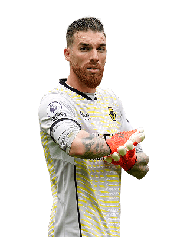
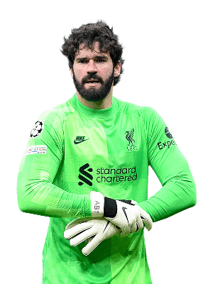
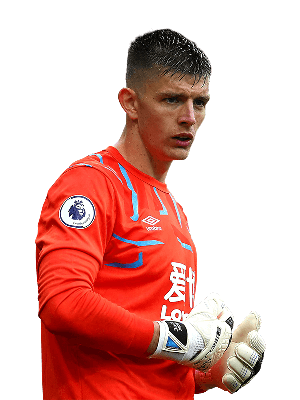
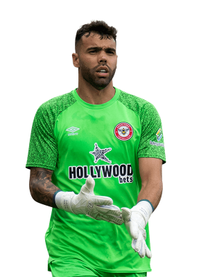
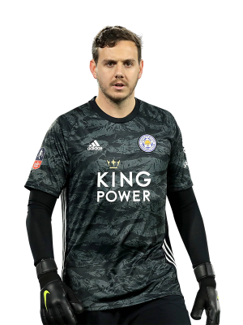
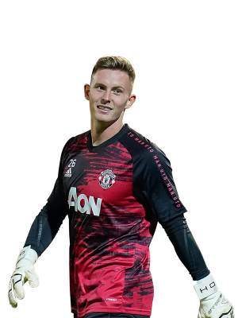

Expected points per gameweek - 4.71
Expected points per million - 0.92
José Sá is our pick for the best goalkeeper, with an expected points of 4.71 he ranks second out of all goalkeepers, only behind Dean Henderson and above the likes of Ederson and Alisson. However, playing with a new manager in Julen Lopetegui that is known for being defensively solid, we expect him to continue to perform and rack up clean sheet points despite being part of a poor Wolves team this season.
Touchline rating 8/10.

Expected points per gameweek - 4.61
Expected points per million - 0.85
Alisson is our pick for the second best goalkeeper, with an expected points of 4.61 he ranks third out of all goalkeepers, despite a shakey start to the season, things have began to look up with a string of good performances and crucial saves underlining just how good he is. However, at 5.4m he is one of the most expensive goalkeepers so if you're short on money he is not recomended.
Touchline rating 7/10

Expected points per gameweek - 4.40
Expected points per million - 0.83
Pope is our third pick, narrowly losing to Alisson due to having very slightly worse xp and value, but with an xp of 4.40 and value of 0.83 Pope is certainly a viable option
Touchline rating 7/10

Expected points per gameweek - 4.42
Expected points per million - 0.96
David Raya is our pick for the best value goalkeeper, with a value rating of 0.96 he offers excellent return on investment, so if you're strapped for cash Raya is an great option.
Touchline rating 7/10

Expected points per gameweek - 3.73
Expected points per million - 0.91
Danny Ward is not the highest in terms of xp at 3.73, however, if you need value then he's the perfect option. As the cheapest goalkeeper that regularly starts he should be your choice for your second goalkeeper, but could 100% do a job as first choice goalkeeper if you need the money, especially if paired with Iversen.
Touchline rating 7/10

Expected points per gameweek - 4.94
Expected points per million - 1.05
Purely on xp and value data Henderson appears to be the best goalkeeper by far and would definetely do a very good job if he was your goalkeeper. However, we do have our reservations, firstly a lot of his xp comes from penalty saves, which cannot be relied on and secondly Nottingham forest have one of the worst defences in the league so to expect Henderson to maintain his save percentage for the rest of the season would be unwise. Therefore, the only reason Henderson is third is due to the unpredictability of how he and Nottingham Forest will perform for the rest of the season. But if you're in need of differentials to make back some positions, Henderson might be your guy.
Touchline rating 7/10